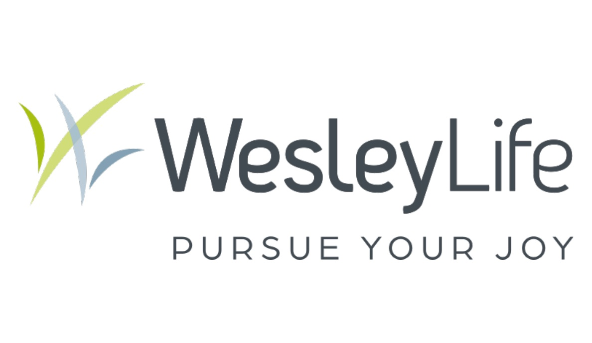
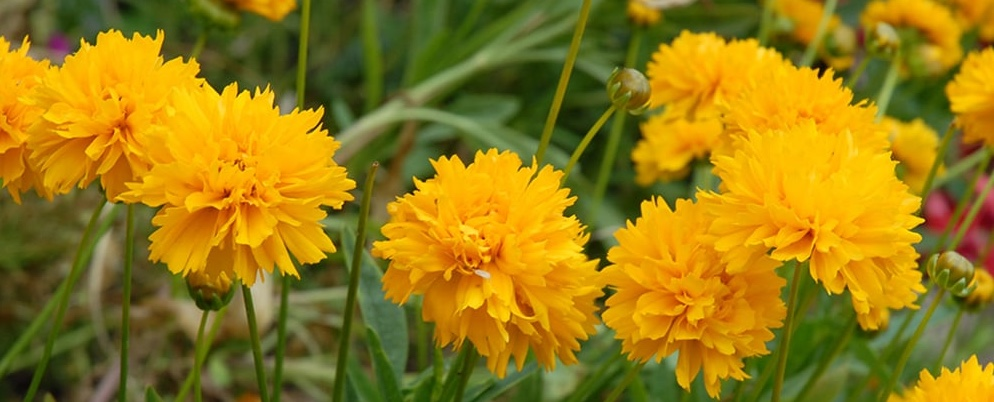

Golden Joy
tagline
To provide a community led resource to help older adults maintain their indepdence while encourage high school/college students to make connections with members of the communities.
As people grow older, what were once simple tasks become more time-consuming and more difficult to complete. Unfortunately, friends and family members aren't always readily available or within driving distance to help as much as they would like. Ultimately, this opens the door for the opportunity to grow and strength intergenerational relationships by leaning on the support of younger members of local communities such as high school and college students, to assist with tasks like house or yard work, technological needs, or running errands.
With such a generational divide, how can younger generations connect with older adults to assist them with tasks, enabling them to retain their independence while also increasing community involvement?
Inspiration
Both sets of my grandparents are in their late 80s/early 90s and up until recently lived indepedently and quite far from myself or other relatives. While they have since moved closer to family, they still don't want to hand over their independence by moving into assisted living or a retirement home, and who could blame them. Over the years, I have become more aware of the challenges they face with complete simple tasks whether it dusting or challenges with technology.
While this is not an uncommon occurrance, it caused me to think about how there could be a way to have their local commmunity offer help, leading me down the path of how to involve younger generations like high school or college students, and ultimately reenforecd the overarching theme of this project Intergenerational Connections.
What are intergenerational connections? And why are they relevant?
Strength Community Relationships
Never Stop Learning
Reduce Loneliness
The basic idea of intergenerational connections revolves around building relationships with people of a different age group then yourself. With this type of connection, people are actively taking the time to build connections in their communities with groups that they might not have much interaction with otherwise. In terms of this project, there is not much overlap between 18-23 years old and those who are 60+ years old.
There are also social, political, and economoic impacts that commonly create divides between generations. But by removing that precedent it creates space for more inclusive practices to grow within local communities as people look beyond to see there is one seamlessly simple similarity. The personal skills and knowledge people within each generation have.Everyone has knowledge and skills that we can learned from each other. It doesn't matter how young or old you are there is always something to be learned, especially when people have vastily different interests and expertise in specific subjects.
When you think of everything that has happened in recent years, loneliness continues to be at the forefont, causing negative impacts for several generations. ADD MORE INFO
To revitalize the importance of being involved in one's community, the focus on building intergenerational connections becomes the forefront of the conversation, as the project will work to address the following;
How to build more in-person connections?
How to strengthen community involvement with younger generations?
What are ways to help and assist one another?
How to create a space for people to meet?
How can two different generations communicate with each other?
External Connections


intro both connections leading to how that confirmed or changed the audience I was looking
Understanding the Audiences
Senior Citizens
High School/College Students
Working with two audiences on opposite ends up the spectrum, it was important to make sure that I was creating a project that would visually pull them in and attract them to continue to explore what the program can offer them.

Golden Joy is the nickname of the flower Coreopsis, which are known for their reliability due to long blooming periods and their rich yellow-orange coloring.
Finalizing the name acted as the first step towards create a solution as it helped to establish a theme that continued to carry over into other components within the project.

Support
Connections
Community
Accessible
Bridging Gaps